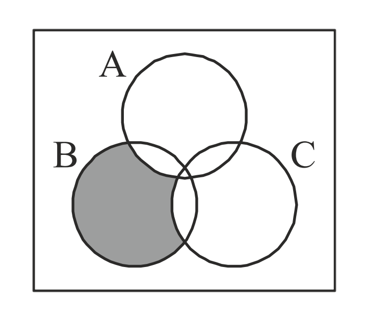

1) The number of digit in \(20^{301}\) (given \(\log_{10} 2=0.3010\)) is
- 602
- 301
- 392 ✔
- 391
2) \(\displaystyle \int^1_0 \log(\frac{1}{x}-1)dx = \)
- 1
- 0 ✔
- 2
- none of these
3) if \([x]\) denotes the greatest integer less than or equal to \(x\), then the value of the integral \(\displaystyle \int^2_0 x^2 [x] dx\) equals
- 5/3
- 7/3 ✔
- 8/3
- 4/3
4) The value of \(\displaystyle \lim_{x\to 2} \int^x_2 \frac{3t^2}{x-2} dt\) is
- 10
- 12 ✔
- 8
- 16
5) The number of real roots of equation \(\large \log_e x + ex = 0\)
- 0 (zero)
- 1 ✔
- 2
- 3
6) if \(\alpha, \beta\) are the roots of \(x^2-px+1=0\) and \(\gamma\) is a root of \(x^2+px+1=0\), then \((\alpha+\gamma)(\beta+\gamma)\) is
- 0 (zero) ✔
- 1
- -1
- p
7) Area of the region bounded by \(y=|x|\)and \(y=-|x|+2\) is
- 4 sq. units
- 3 sq. units
- 2 sq. units ✔
- 1 sq. units
8) The equation \(8x^2+12y^2-4x+4y-1=0\)
- an ellipse ✔
- a hyperbola
- a parabola
- a circle
9) The sum of integers from 1 to 100 that are divisible by 2 or 5 is
- 3600
- 4150
- 3050✔
- 4020
10) If the axes are rotated through an angle of 30° in the clockwise direction, the point \((4, -2\sqrt3)\) in the new system was formerly
- (2, √3)
- (√3, -5) ✔
- (√3, 2)
- (2, 3)
11) in the rate of increase of the radius of a circle is 5 cm/sec, then the rate of increase of its area when the radius is 20cm will be
- 10π
- 20π
- 200π ✔
- 400π
12) The area surrounded by the curves \(|x|+|y|=1\) is
- 2 ✔
- 4
- 6
- 8
13) A man of height 2m walks directly away from a lamp post 5m high on a level ground at a speed of 5 m/s. Find the rate at which the length of his shadow is increasing when he is 4 m from the foot of the lamp post.
- \(3\frac{1}{3}\)
- \(2\frac{2}{3}\) ✔
- \(4\frac{2}{3}\)
- none of these
14) The equation \(e^x+x-1=0\) has, apart from \(x=0\)
- One other real root
- Two real roots
- No other real root ✔
- Infinite number of real roots
15) If \( \vec{a}\cdot\vec{b}=\frac{1}{2}|\vec{a}| |\vec{b}|\), then the angle between \(\vec{a}\) and \(\vec{b}\) is
- 0°
- 30°
- 60°✔
- 90°
16) Which of the following function is decreasing on \(\displaystyle (0, \frac{π}{2})\)
- \(\sin 2x\)
- \(\tan x\)
- \(\cos x\) ✔
- \(\cos 3x\)
17) If \(i=\sqrt{-1}\), then the value of\(\displaystyle \sum^{200}_{n = 1} i^n\) is
- 50
- -50
- 0 ✔
- 100
18) The maximum number of real roots of the equation \(x^{2n}-1=0\) is
- 2 ✔
- 3
- n
- 2n
19) \(2^\frac{1}{4}.4^\frac{1}{8}.8^\frac{1}{16}.16^\frac{1}{32}.... \)is equal to
- 1
- 2 ✔
- \(\frac{3}{2}\)
- \(\frac{5}{2}\)
20) The range of \(f(x)=\sqrt{x-1}\) is
- \((0,\infty)\)
- \([0,\infty)\)✔
- \([0,\infty]\)
- \((-\infty,\infty)\)
21) কোন বৃত্তের বৃত্তাংশের পরিসীমা যদি বৃত্তের পরিধির অর্ধেক হয়,তাহলে বৃত্তাংশের বৃত্তীয় মান হবে
- \(\pi+2\) রেডিয়ান
- \(\pi-2\) রেডিয়ান ✔
- \(\pi+1\) রেডিয়ান
- \(\pi-2\) রেডিয়ান
22) \(\displaystyle \cos A=\frac{\sin B}{\sin C}\) হলে \(\triangle ABC\) হবে
- সমবাহু
- স্থূলকোণী
- সমকোণী ✔
- সমদ্বিবাহু
23) \(\displaystyle f(x)=\frac{1}{2-|x|},(x≠± 2)\) অপেক্ষকের অবম মান হল
- \(\large \frac{1}{2}\) ✔
- 1
- 2
- 3
24) If in an AP \(t_1=\log_{10} a, t_{n+1}=\log_{10} b,\) and \(t_{2n+1}=\log_{10} c \) then a, b, c are in
- AP
- GP
- HP
- none of these
25) The shaded region in the given figure is
- B \(\cap\) (A \(\cup\) C)
- B \(\cup\) (A \(\cap\) C)
- B \(\cap\) (A \(-\) C)
- B \(-\) (A \(\cup\) C)
26) Value of sin 10° + sin 20° + sin 30° +......+sin360° is
- 1
- 0
- 2
- 1/2
27)
28)
29)
30)